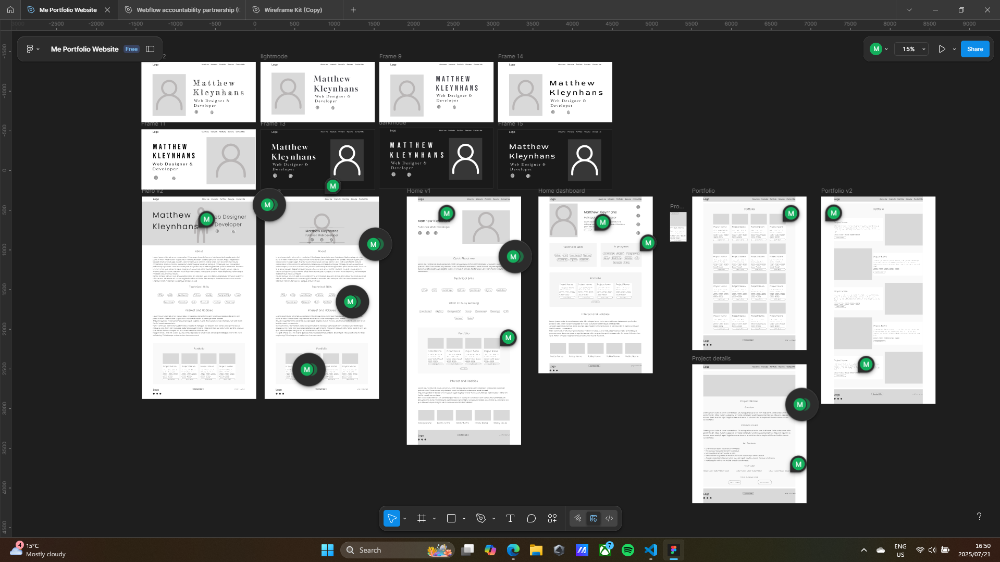

Portfolio Website
1
Overview
All designers and developers need a way to showcase their skills and experience to outside parties, whether it is for employment opportunities, collaborative opportunities or even just for personal experimentation and expression. This usually comes in the form of a portfolio, however a portfolio is more than just a list of technical skills, completed coursework, and work experience. A portfolio should also display a sense of self (otherwise we may as well just look at a single page resume), and it would ultimately be the first impression to the viewer of who I am, as a designer, a developer, and as a person.
As a self-taught developer without formal industry credentials, this portfolio is my proof-of-skill, my design philosophy, and my entry point into the professional world. I would need to demonstrate the following skills in the portfolio:
Design Skills:
- The ability to gather inspiration and create a conceptual design that is detailed and clear enough to hand over to a developer
- A design that is functional, easy and intuitive to use, and aesthetically pleasing while not being cumbersome or unnecessarily cluttered
Development practices
- A good understanding of semantic HTML and being able to add CSS styling according to the design. Additionally having an effective class naming and styling system to make it easier to make changes down the line.
- Having the understanding and ability to make the site responsive for any viewport size.
- While it may be overkill for a portfolio website, being able to demonstrate an understanding of Accessibility requirements is a plus
- Makes use of version control, I have been using Git to store my code in main branch on my Github profile so when I experiment in the future or mess something up then I can access previous working versions of the site. Subsequent phases also get pushed to a new phase branch with milestone tags to keep track of progress.
Forward-thinking
- While the site may only have a few small projects at the moment, I have a list of things I want to try and eventually showcase, ranging from dynamic Webflow sites, to more complex machine learning scripts in Python. So at some point I want to develop a CMS or some backend Javascript and EJS to more effectively store, retrieve and display the multitudes of projects in a singular template. This will also help with the maintainability of the site
Project Goal: Develop a website to showcase all my completed and in progress projects in a way that not only displays the frontend or backend in a workable state, but also show the thought process behind the development and how the process has changed over time.
Approach: A phased approach starting with a functional static website, a refactoring session to improve the codebase to keep it DRY, add dynamic rendering and a project database later on as the site evolves and project number increases.
2
Main body: from vision to execution
Software Architecture
Multi-phased rollout: prioritizing speed and functionality, a basic static site will evolve over time to support a database and dynamic rendering to improve maintainability and flexibility.
Modularity and keeping it DRY: borrowing concepts from Bootstrap and Webflows Clients First framework, styles will be applied to global selectors and utility classes. To limit potential class bloat, styled utility classes will only apply to main components such as sections, headings, paragraphs, buttons/ links, and lists. Layouts will be styled on an individual per section basis instead of creating styled class components.
Separation of Concerns: the above described method effectively separates layout styling on a per section basis from the global utility classes to transform font, colours, padding/margins. This separation makes it easier to change either the colour pallet or font styles through the utility classes or to change layouts locally. This approach trades reusability for granular control, allowing each section to evolve independently. This should also help limit regressions in the code from overly described classes/components.
Systems Design
Semantic clarity and styling requirements: to ensure good SEO from clear semantics, the HTML will be built first using the correct tags to give meaning to the content. For styling purposes where necessary, div and span tags will be used as content wrappers only.
CSS selector specificity: to enable a modular codebase and to limit regressions, element selectors will be primarily used to apply styling. This gives the lowest order of specificity so that class selectors can then be used to override or ensure something is not overridden by accident resulting potential regressions. This approach leaves ID selectors for any unexpected behaviour and this hierarchy ensures predictable overrides and minimizes style conflicts as the site scales.
Future optimizations to be implemented to ensure minimal performance hit, lazy loading, minification, image compression.
Tech stack
Frontend
- HTML
- CSS
Backend
- Future scalability
Tools
- Figma
- Git
Concepts
- Graphic design principles
- UX/UI
- Accessibility design
Future expansion tech
- EJS templating engine
- JSON or MySQL
Key features
- Multiple linked web pages.
- Responsive (inp rogress).
- Design with Accessibility standards in mind (in progress).
- Has a picture of my snake.
Feature Rationale
The site is intentionally basic, purposefully easy to use and not be cluttered with features that do not add but rather take away from the user interface and experience. As such, a basic navigation between pages with clear CTAs to go to specific endpoints.
UX & Layout Decisions
While looking through other dev portfolios and gathering inspiration, I noticed patterns of overusing lighting effect, animations, and messy and cluttered layouts. I wanted to veer away from this by sticking to a minimalist design and only using effects and animations to add that final polish. The design also ensures good visual hierarchy with large, bold and high contrast heading fonts with good size layering between heading levels. Body text, being the smallest font size (1.5REM = 24px), but is still large enough for accessibility considerations, is also set back a bit by having a slightly lower font contrast (but still visible enough to ensure good readability).
By prioritizing layout over 'garnishings', I aimed to create a strong base design that would look good without the fluff. This base will then be polished to create a visually stunning product that is also easy to alter and maintain.
As of writing this, I am in a small group of designers/no-code developers, working on improving our Weblow skills and workflows. Currently utilizing the ‘Clients first’ framework we are rebuilding a site from scratch to better understand how to implement the framework into a complex website that also incudes dynamically rendered content (See project 3). The concepts from Clients first has influenced the component based styling on my portfolio to better re-use CSS code across various HTML elements. This approach also helps with modularity of the design and offers a high degree of flexibility.
Accessibility Considerations
The initial design did not include accessibility audits and attempted to stick with high contrast between text and background, and large text (smallest text being larger than 18.5px). Another easy win was ensuring all images and icons have ALT text in the html tags.
The redesign was completed and the colour contrast checked with an online accessibility checker. The platform checks the contrast between text (font-size of 18.5px) and background and returns one of 3 results, fail where the contrast is below 4:5:1, a successful AA rating for WCAG compliance above 4:5:1, and a AAA rating for a contrast above 7:1. All the redesign colour combinations were checked, Failed colours were substituted first, then alternative colours were checked if the AAA rating failed but passed the AA rating. For the final design, I eventually opted for the higher rating by only accepting the colours that passed AAA compliance.
More consistent usage of 'REM' for sizing instead of 'px', this helps if the user has altered the base font size in their browser preferences or if they are using a magnifying tool. All px valuase have been replaced with REM.
Future accessibility consideration will be adding applicable ARIA labels, and keyboard shortcuts for site navigation and interaction.
Testing & Validation
Currently only manual testing that all links are functional.
Deployment Strategy
The multi-phased layout is as follows:
- Phase 1 (complete): Initial site design with basic functionality.
- Phase 2 (in-progress): refactoring of CSS to remove redundant code and to create modular components, a style overhaul and per project new case study was added. Simple CSS animations.
- Phase 3 (future): create a database, either using JSON or a MySQl relational database. Migrate the header, footer and project case studies to EJS for dynamic rendering and effective use of EJS partials to improve maintenance.
Documentation & Maintainability
The phase 2 refactoring process made the benefits of EJS partials very evident, as I was making alterations to on footer or nav element, I had to ensure the same alteration was applied (correctly) to all instances. Doing this across 8 existing pages was tiresome and honestly I wished I had already integrated EJS partials into the initial design.
The evolution of this site will be documented in a Portfolio case study on the site and also in the README.md on my Github account.
3
Role of AI in the Project
AI went largely unused for the portfolio site, it was utilized as a collaborator in the phase 2 refactor. By the very nature of a minimalist design, any flaws or inadequacies are brought forward and without any distraction, they stick out like a sore thumb. As a result a style overhaul was necessary, AI helped during this process by outlining key elements to be assessed and by providing some minimalist portfolios examples as inspiration. Once the refactor process was complete, it also assisted to do a code review and provide feedback on any additional items to be assessed for refactoring.
4
Reflection & What to Improve
What I would do differently
A finalized design concept should be established after wireframing and layouts are completed. This is to streamline the development process and ensure that design decisions are kept in the design process to prevent restyling and refactoring just for stylistic purposes.
Accessibility audits and considerations would be implemented earlier in the design process.
A better outline of the system design would aid the development of the structure and styling by ensuring the necessary wrappers are in place before creating components and styling classes. I found a roadblock (that still needs to be resolved) where certain style decisions will result in structural and styling, component refactoring site wide. By defining the system better and earlier on, this could have been completely avoided and would lend to future flexibility, which is now a bottleneck and highlighted the importance of architectural planning even in small-scale projects.
The repetition of manually inserting the same alteration across multiple pages made the value of EJS partials painfully clear—next time, they’ll be part of the initial build.
Learning vs Scalability
The initial static website design and development was more of an implementation practice than learning, restricted in scalability but being my first project that was truly mine, where I was in charge of all decisions, the entire future of the site.
The refactoring process was a time of self reflection, having learnt more backend technology and concepts, having more development experience from the no-code technology, and having a more refined stylistic pallet, and by understanding the scalability bottlenecks, I have been able to identify improvements that can be made and how to reduce future technical debt and refactoring overhead.
Philosophy
Quality over quantity: prioritizing a good layout instead of relying on surface level animations and glitter to make something look good.
Minimalist design: properly implemented graphic design principles from the beginning.
Component based styling: keeping it DRY
5
Key Takeaways
A portfolio is more than a showcase—it's a system, a story, and a signal of intent.
Early architectural decisions shape long-term maintainability.
Accessibility isn't optional—it's a design constraint that improves usability for all and should be considered as early as possible.
Minimalism demands precision; it exposes flaws and rewards clarity.
Refactoring isn't just cleanup—it's a reflection of growth and a rehearsal for scalability.
This project taught me that good design is invisible, good code is adaptable, and good systems evolve.